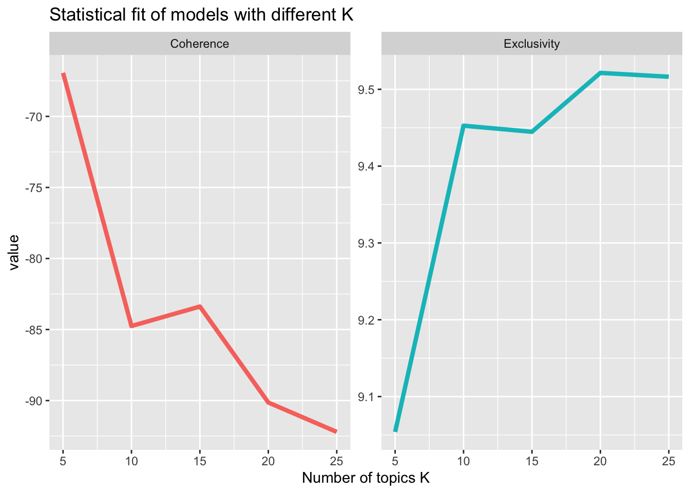
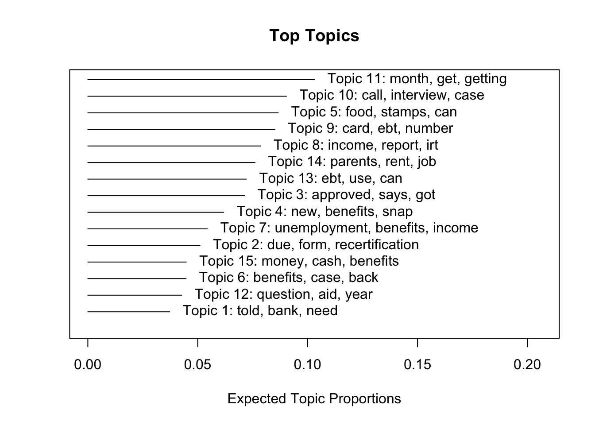
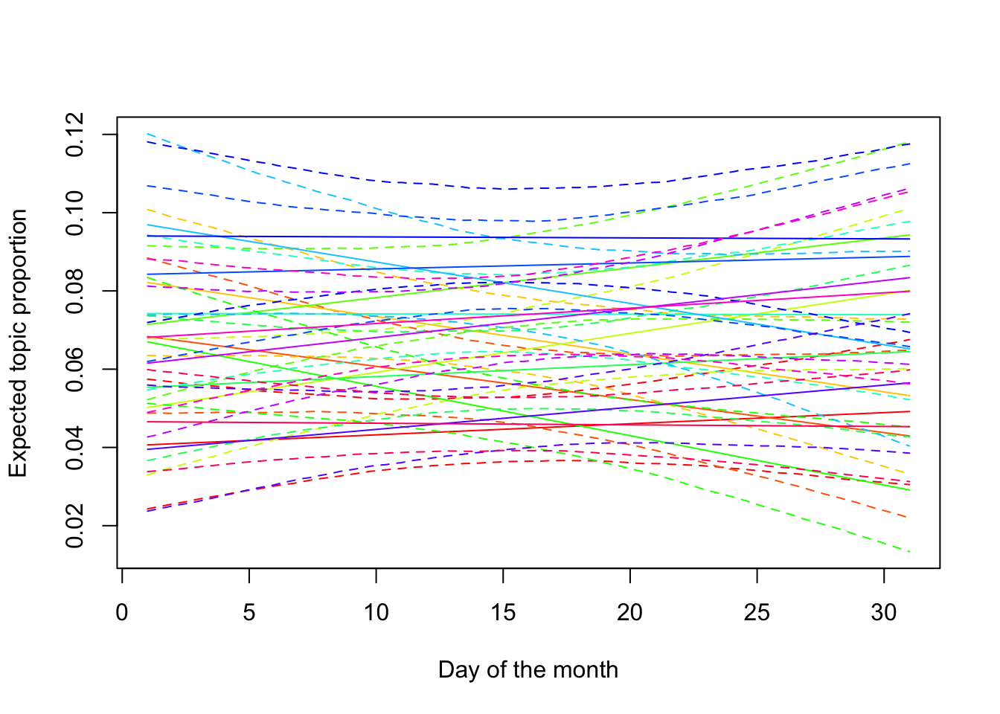
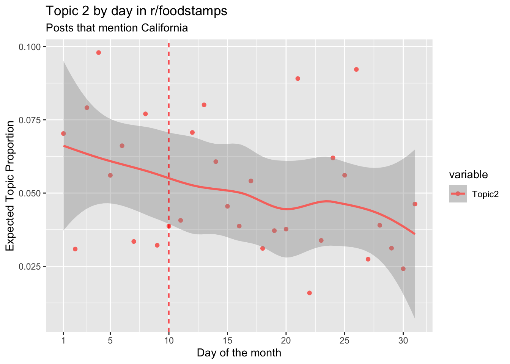

SNAP stands for Supplemental Nutrition Assistance Program. - Administered state by state; different states have different rules. It is funded by the US Department of Agriculture. - Formerly known as food stamps, today typically an electronic debit-card style, while it used to be true that it was literally distributed as stamps
- Goal: reduce hunger
It is a means-tested program, which means that if an individual makes above a certain threshold of income, they will receive reduced benefits, or are even no longer eligible to receive any money. Because of the means-tested nature of the benefit, this means that there are significant administrative costs on governments at nearly 15.8 cents of administrative costs per dollar of benefits disbursed. Moreover, these costs are also borne by program participants, who must navigate and deal with the demands of eligibility workers and policymakers.
While the goal of the program is to smooth the income of individuals and families, because people’s income varies over time, there are significant information and administrative problems associated with the program. For instance, consider someone whose job lays them off in March but is rehired by a new business in May, so they are out of work for about 2 1/2 months. During those months, they do not have any income. Because it takes time for the paperwork to process, they may not receive benefits for a few weeks or even a few months after applying to SNAP. Yet, because they are hired in May, they are then no longer eligible for benefits. Depending on the state, they likely have to fill out paperwork each month verifying their income levels. Ideally, this would solve the problem. However, some SNAP participants experience painful “clawbacks” in which the government takes money back from welfare recepients because the government overpaid the benefits.
Moreover, because of the complicated nature of the program and the eligibility requirements, which include meeting with caseworkers and submitting paperwork, there are high information and administrative issues on the governmental side, as well as adverse outcomes. In California, economic analyses indicate that even when SNAP participants are removed from the program for non-compliance, they often return as soon as the next month as their “true” eligibility has not changed. This highlights the “administrative burden” that SNAP participants face in the program.
Additionally, SNAP benefits are disbursed on a specific day of the month in different states.
Administrative burden
Administrative burden is the idea that the burdens that citizens face can influence policy outcomes. Herd & Moynihan (2018) have identified that there are three major types of burdens: - Learning costs. These are incurred by users of government programs as they have to learn how to navigate the program. It is sometimes called an “evaluation” cost, or even a “search” cost. - Psychological costs. These are borne by citizens from stigma, loss of autonomy, or frustration, and also general stress at dealing with obtuse government systems. - Compliance costs. These are the costs that it takes to comply with a particular rule or regulation, including the travel costs, but is more generally understood as the “provision of information or documentation to document standing.” Each of these different costs is distinct, but there are also overlaps. Addressing administrative burden has become an initative of the Biden administration and the Office of Management and Budget, and the Office of Information & Regulatory Affairs.
Takeaways from SNAP program design
Administrative burden is present in the program. Means-testing exacerbates the issue
Scholars are studying SNAP for its administrative burden
In short, posters are engaging in information requests and information sharing outside of more traditional settings. Examples of more traditional settings would include the MN Dept. of Human Services, their A-Z list of resources, their FAQ or the SNAP hotline 651-431-4050 in the Twin Cities metro area or 800-657-3698 in greater MN.
The fact that posters in r/foodstamps are reaching out in these non-traditional and non-“strategic” challenges may indicate that these more traditional sites of information are not meeting all of the needs of participants. Patterns within these posts could indicate areas of improvement for strategic communications and communication from the government to citizens, or even suggest that institutions in charge of communicating with SNAP participants may benefit from participating themselves within these forums in more formalized ways.
This project is informed by the ongoing conversation within the discipline around Tactical Technical Communcation (TTC). TTC is differentiated within this area of inquiry from “strategic” communciations, drawing on de Certeau’s distinction between the strategic and the tactical:
Important
A tactic differs from a strategy in that it lacks a place or “property,” relying instead on action in the “cracks” between “proprietary powers”: “It poaches in them. It creates surprises in them. It can be where it is least expected. It is a guileful ruse. In short, a tactic is an art of the weak” (de Certeau, 1984, p. 37).
Important examples within technical and professional communication of scholars studying TTC include, but is not limited to: - Colton, J. S., Holmes, S., & Walwema, J. (2017). From NoobGuides to #OpKKK: Ethics of Anonymous’ Tactical Technical Communication. Technical Communication Quarterly, 26(1), 59–75. https://doi.org/10.1080/10572252.2016.1257743
Edenfield, A. C. (2019). Queering consent: Design and sexual consent messaging. Communication Design Quarterly, 7(2), 50–63. https://doi.org/10.1145/3358931.3358938
Edenfield, A. C. (2021). Managing Gender Care in Precarity: Trans Communities Respond to COVID-19. Journal of Business and Technical Communication, 35(1), 15–21. https://doi.org/10.1177/1050651920958504
Edenfield, A. C., Holmes, S., & Colton, J. S. (2019). Queering Tactical Technical Communication: DIY HRT. Technical Communication Quarterly, 28(3), 177–191. https://doi.org/10.1080/10572252.2019.1607906
Holladay, D. (2017). Classified Conversations: Psychiatry and Tactical Technical Communication in Online Spaces. Technical Communication Quarterly, 26(1), 8–24. https://doi.org/10.1080/10572252.2016.1257744
Kimball, M. A. (2006). Cars, Culture, and Tactical Technical Communication. Technical Communication Quarterly, 15(1), 67–86. https://doi.org/10.1207/s15427625tcq1501_6
Kimball, M. A. (2017). Tactical Technical Communication. Technical Communication Quarterly, 26(1), 1–7. https://doi.org/10.1080/10572252.2017.1259428
Peter, H. A. S.-S. (2017). “Make a Bomb in the Kitchen of Your Mom”: Jihadist Tactical Technical Communication and the Everyday Practice of Cooking. Technical Communication Quarterly, 26(1), 76–91. https://doi.org/10.1080/10572252.2016.1275862
These articles, starting with Kimball’s “Cars, Culture, and Tactical Technical Communication,” discuss the ways that users seek to navigate power systems and find dynamic ways to generate solutions. For instance, in the original Kimball article, the main focus is users who are interested in fixing their cars themselves. Today, however, in conjunction with the social justice turn, scholars have pointed out the ways that queer people use tactical technical communication, or even how users repond to psychiatric diagnoses.
Arguably, we can see tactical technical communication happening in r/foodstamps, in which users practice “an art of the weak” as they navigate between cracks in strategic communication by the government or non-profits. While individual users may be assigned “flairs” or special tags in their profile that indicate when they comment about their role, such as “SNAP policy expert” or “SNAP eligibility expert - STATE”, it is still the case that users are turning to the subreddit in order to navigate between the cracks of more formalized systems.
An important question that remains, then, is how to characterize the nature of the TTC that is happening on r/foodstamps. Importantly, all of the previous approaches to understanding tactical technical communication have taken a much more qualitative approach, characterized by interviews and close reading. Therefore, as this Quarto website uses a computational approach, it offers a novel way to think about and analyze tactical technical communication.
Characterizing the data
There are many possible ways to potentially understand the posts on r/foodstamps, from qualitative to computational. Ultimately, given the size of the data that is possible (over 8000 posts), and the phenomena of interest, I chose to use computational techniques, including topic modeling, to understand the data.
Moreover, because of the size of the data and because of the nature of SNAP, I chose to focus on the state of California. I did this for several reasons: - California is the largest state and has the greatest number of SNAP recipients - All of the states which had clearer and cleaner disbursement deadlines were very small states. For instance, the state of Connecticut only had 25 observations across nearly 8000 posts. Other small states were similar. Meanwhile, California distributes benefits from the 1st to the 10th, which is relatively clean and condensed. Additionally, because of the mechanism by which they choose when to distribute benefits to who (based on the last digit of the case number) it does not seem likely that there are other variables likely to affect when an individual would receive their benefit, and so cases would be evenly distributed over the 10 days of disbursement.
Research questions
Does the composition of topics change over time for posts about California?
How do they do so?
Do the topics vary based on the day of the month and the number of days it has been since SNAP benefits were disbursed?
The answers to these questions are important, because if it is true that the composition of topics varies based on the number of days it has been since SNAP benefits were disbursed, that could indicate that users were turning to the subreddit as they experience problems with their disbursement or eligibility.
Consider for example one potential story of a poster, who expected to receive their EBT money on the 3rd of the month. It is now the 5th, so he posts on the subreddit asking a few questions hoping to receive an answer. On the other hand, consider another potential story about a poster who is asking about the backlog of cases. Often, caseworkers fall behind in their verification checks, sometimes up to 120 days behind. A user who was caught up in the backlog could post at any time of the month to seek out additional information about when their application was likely to be processed, and may not be more likely to post at a particular time of the month.
About topic modeling
Conveniently, topic modeling can pick up on the different types of words that people use, and sort them into probabilities. After looking at a lot of posts, a topic model can suggest that the two stories I laid out are likely to belong to different topics. Then, if the proportion of topics is very different on the 10th day of the month than, say, the 20th, that could indicate that when users experience specific problems, they turn to the subreddit.
It is important to point out the limitations of this approach, as well. A topic model can do a good job of so-called “distant reading,” but it does not do a good job of picking up ideas and concepts that a close reading approach done by a human is able to understand.
What a topic model does is understand the words that are in a document, in our case, a post, using a “bag of words” approach that is more able to understand how words are “dependent on the broader context that they are used in natural language”. Then, the topic model asks the human, “how many categories or topics do you think that there are?” After making this choice, the model then figures out which words are likely to appear within the same document. It’s then likely that, for documents where there is some overlap in terms of the words that they use, are more likely to be similar than documents that don’t use the same words. This is expressed as a “probability” that a particular document belongs in a particular category. Taking the top probability for each document, we can then graph how the aggregation of these probabilities changes over time, based on how many days it has been since SNAP began to disburse.
What this approach is not is it is not “the truth” or some other perfect representation of reality. It is a flawed computer program designed by a flawed human, so it should not be taken as an ideal representation of r/foodstamps. It would be perfectly possible to look at 8000 posts and do a qualitative analysis of these posts, sorting them, tagging them, and categorizing them by hand. This would be an equally reasonable and perhaps more interesting and more valid way of approaching this data.
However, given the size of the data, it’s much quicker to run a topic model than it is to develop a qualitative coding schema, so this is a reasonable first pass at this, and can allow for the generation of insights that can be developed further through interviews and more qualitative approaches.
About the data
The data in this case is post data and metadata from r/foodstamps. Initially and for the development of the code, I used the package in Rstudio called RedditExtractoR. This allowed for easy and convenient access to data when I was starting out. Unfortunately, given Reddit’s API limits, this approach was limited to essentially the most recent 1000 posts. After running the package twice about a month apart, I was left with around 1300 posts, which left around 200 posts that mentioned the state of California.
However, given the fact that I was interested in a longitudinal look at the data, I knew that I needed additional data. Therefore, after some Googling, I found this post on Reddit which described how to get larger data sets online for the top 20k subreddits, of which r/foodstamps was fortunately one. After taking a quick tutorial in torrenting from my future sister-in-law, I downloaded Qtorrent, got a .zst file, and extracted it to find a very messed up JSON file. I used JSONlint.com to try and figure out what was wrong, and I discovered that every single line of the data was missing a comma. So copied and pasted the data into Excel, added a column that contained a comma, and merged the two together, resulting in JSON data that was functionable and readable by R through the package jsonlite.
What follows is annotation and description of the code that was used to produce the results.
Warning
Any problems with the code are my fault and my fault alone. Viewer discretion advised. I am certain that there were cleaner and more reproducible ways that I could have created this if I knew how.
Importing data
Here, I am importing data from JSON into Rstudio.
library(jsonlite) # handy package for loading and reading in JSON datalibrary(tidyverse) # I just always install it
Warning: package 'dplyr' was built under R version 4.2.3
Warning: package 'stringr' was built under R version 4.2.3
── Attaching core tidyverse packages ──────────────────────── tidyverse 2.0.0 ──
✔ dplyr 1.1.4 ✔ readr 2.1.4
✔ forcats 1.0.0 ✔ stringr 1.5.1
✔ ggplot2 3.4.4 ✔ tibble 3.2.1
✔ lubridate 1.9.3 ✔ tidyr 1.3.0
✔ purrr 1.0.2
── Conflicts ────────────────────────────────────────── tidyverse_conflicts() ──
✖ dplyr::filter() masks stats::filter()
✖ purrr::flatten() masks jsonlite::flatten()
✖ dplyr::lag() masks stats::lag()
ℹ Use the conflicted package (<http://conflicted.r-lib.org/>) to force all conflicts to become errors
# importing JSON datajson_data <-fromJSON("~/Documents/GitHub/8520 Final Project/output/data/foodstamps_submissions.json")
Cleaning data (a lot of cleaning)
In this case, a lot of the data (nearly all of the columns) is metadata of the posts. A lot of the posts simply don’t have all the attributes, and aren’t relevant to this study.
For instance, a video post includes metadata about the video, but that’s not the case for all of the posts. That explains why there are so many columns. However, some of the rows in columns that we are actually interested in don’t have any data in them. Let’s replace that data with NA so that we know what’s up with those rows.
json_data <-as_tibble(json_data)# Cleaning data, fixing rows which do not have datajson_data$author <-replace(json_data$author, is.na(json_data$author), NA)json_data$url <-replace(json_data$url, is.na(json_data$url), NA)json_data$created <-replace(json_data$created, is.na(json_data$created), NA)json_data$created_utc <-replace(json_data$created_utc, is.na(json_data$created_utc), NA)json_data$subreddit <-replace(json_data$subreddit, is.na(json_data$subreddit), NA)json_data$title <-replace(json_data$title, is.na(json_data$title), NA)json_data$permalink <-replace(json_data$permalink, is.na(json_data$permalink), NA)json_data$selftext <-replace(json_data$selftext, is.na(json_data$selftext), NA)# Selecting columns I want to keepselected_columns <-c("author", "url", "created", "created_utc", "subreddit", "title", "permalink", "selftext")# Creating a new data framecleaned_data <- json_data %>%select(all_of(selected_columns))
The dates were UNIX dates (the number of seconds since 1/1/1970), so I fought with Rstudio for probably an hour to get them into a human intelligible form:
# creating POSIX vectorcleaned_data$created_utc <-as.POSIXct(as.numeric(cleaned_data$created), origin ="1970-01-01", tz ="UTC")# Converting from UNIX to real dateslibrary(lubridate) # lubridate offers tidy ways of handling and dealing with datescleaned_data$created_utc <-as.integer(cleaned_data$created_utc)cleaned_data$created_utc <-as_datetime(cleaned_data$created_utc)
Subsetting California data
Before we do some topic modeling, we want to extract out only the data that references the state of California. California is the biggest state, has the greatest number of people on SNAP, and has by far the greatest number of posts referencing it. In order to understand the dynamics of the program, we have to understand the administration which happens at the state level. Because of this, I have chosen to take a state-by-state approach to this. This website focuses on California, but this work could be extended to other states in the future.
We will also do some additional cleaning. For instance, combining the title and text columns together to create a single column, “title_and_text.” I did this because the title may contain important information about the post, including the state data, as well as information that may help us to understand the topics within that post. (Julia Silge does this as well in this post)
Then, I split the date-UTC column of the data into year, month, and day, each in separate columns. I did this so that we can focus on which day of the month the post was on. Again, if there are patterns in the topics based on the day of the month, that might indicate that users are turning to the subreddit in lieu of reaching out to the government for assistance.
Then, I searched the data for references to California. I used a wide variety of search terms in order to capture as many posts as possible that are posted about the California SNAP program, including slang, and the official name of the program, CalFresh. Then, we can de-duplicate because it seems likely that some posts may mention both “CalFresh” and “California,” for instance.
Mentioning this here again: California disburses SNAP money on the 1st through the 10th of the month, depending on the last digit of the citizen’s assigned case number. So if the last digit is 5, their benefits will be delivered on the 5th of the month.
# sub-setting California json data, then running a topic model on that datalibrary(tidyverse)library(stm)
stm v1.3.6.1 successfully loaded. See ?stm for help.
Papers, resources, and other materials at structuraltopicmodel.com
# combining the title and text columnsraw_data_combined <-unite(cleaned_data, title_and_text, title, selftext, sep =" ", remove =FALSE, na.rm =FALSE)# separating the date utc column into month day yearraw_data_combined <-separate(raw_data_combined,col = created_utc,c("year", "month", "day"))
# changing year, month, and day variable from characters into integersraw_data_combined$year <-as.integer(raw_data_combined$year)raw_data_combined$month <-as.integer(raw_data_combined$month)raw_data_combined$day <-as.integer(raw_data_combined$day)library(quanteda)
See https://quanteda.io for tutorials and examples.
library(stringr)# Searching the data for references to CaliforniaCalifornia_raw_1 <- raw_data_combined %>%filter(grepl("Calfresh", title_and_text, ignore.case =TRUE))california_raw_2 <- raw_data_combined %>%filter(grepl(" Cal ", title_and_text, ignore.case =TRUE))California_raw_3 <- raw_data_combined %>%filter(grepl("California", title_and_text, ignore.case =TRUE))California_raw_4 <- raw_data_combined %>%filter(grepl("Cali", title_and_text, ignore.case =TRUE))California_raw_5 <- raw_data_combined %>%filter(grepl("Los Angeles", title_and_text, ignore.case =TRUE))California_raw_6 <- raw_data_combined %>%filter(grepl("LA County", title_and_text, ignore.case =TRUE))# binding searches together into a single data setCalifornia_raw_master <-bind_rows(California_raw_1, california_raw_2, California_raw_3, California_raw_4, California_raw_5, California_raw_6)# removing posts that have been deleted from the datasetCalifornia_raw_master <- California_raw_master %>% dplyr::filter(!grepl("deleted", title_and_text, ignore.case =TRUE))# For some freaking reason (it works in my other code) data is getting deleted when I do this. After trouble shooting for multiple hours I have given up on this and am bringing in data from my other project to fix the problem. California_raw_master <-read.csv("~/Documents/GitHub/8520 Final Project/output/data/California_raw_master")# Let's make sure that we don't have any duplicatesCalifornia_raw_master <- California_raw_master %>%distinct(title_and_text, .keep_all =TRUE)
This results in just over 1000 posts, and 11 variables.
Weird data sidebar
Because of the format of the data, there were a lot of tokens that were using really really funky characters, like ǒ or ä. After exploring, I realized that these are some kind of artifact from apostrophes in the data. Let’s remove them after investigating, as they do not contain useful information for our topic model.
Now we will begin the tokenization process. We are removing punctuation, numbers, and URLs from the title_and_text variable in the data. We’ll also lower all of the text, and remove all stop words. While these words may have important rhetorical meaning, they are less relevant in this context, because what we are trying to do is see how topics may change over time.
We’ll also remove some of the weird words that were appearing, like äǒs, but we’ll also remove words corresponding to California. I did this because these are words that are not communicating new information to us about the data.
Note
This section mostly follows this tutorial, but it’s really a blend of many, many different tutorials. Many thanks to the people who put these together, I found them all very helpful!
# removing some weird wordsdfm <-dfm_remove(dfm, c("amp", "$", "so", "t", "m", "s", "cal","calfresh","california","aot","äôt","äôm","äôs","los","county","#x200b", "=", "sar7", "aos", "sar-7", "äô"))# Converting from DFM to STMdfm_stm <-convert(dfm, to ="stm")
Topic modeling on that sweet, sweet California data.
Now that we have created some data that is ready to be fed into a structural topic model, we can begin to search for “K” or the number of topics that we want to sort documents into. This is a very important part of topic modeling, so we will run the model many times, varying the number of categories that the computer uses. Then, we will graph some key attributes of each number of categories, and make a qualitative decision about what is best. Some terms to understand: - Semantic coherence - Exclusivity
Exclusivity is the balance to coherence. It is a measure of how exclusive a topic is–so for the words that make up the topic, do they also rank highly in other topics? That could be an indication that the topics are not very exclusive and so additional topics would be beneficial for the analysis. On the other hand, too many topics will degrade the semantic coherence. Again it is a balance between the two, and there is not a single, correct choice.
Finding K
# topic topic modeling ## searching for KK <-c(5,10,15,20,25) # this is what allows us to vary the # of topics.# Running the search (computationally intense, takes a long time)fit <-searchK(dfm_stm$documents, dfm_stm$vocab, K = K, verbose =TRUE)
Making some plots that will help us find an interesting K
Well, that took a long time, and I’ve hidden the output of the code from the Quarto website because it’s just too long. If we do some plots and graphs, that will help us visualize the output from K.
# Create graphplot <-data.frame("K"= K, "Coherence"=unlist(fit$results$semcoh),"Exclusivity"=unlist(fit$results$exclus))big_plot <- plot # Saving this plot for later# Reshape to long formatlibrary("reshape2")
Attaching package: 'reshape2'
The following object is masked from 'package:tidyr':
smiths
plot <-melt(plot, id=c("K"))#Plot resultlibrary("ggplot2")ggplot(plot, aes(K, value, color = variable)) +geom_line(size =1.5, show.legend =FALSE) +facet_wrap(~variable,scales ="free_y") +labs(x ="Number of topics K",title ="Statistical fit of models with different K")
Warning: Using `size` aesthetic for lines was deprecated in ggplot2 3.4.0.
ℹ Please use `linewidth` instead.

Picking a K number
Based on what we can see here, it seems like a good K number could be around 15. That would be a nice balance between coherence and exclusivity, two measures of a good K.
Running the topic model
Let’s run the topic model with 15 topics. Additionally, one of the benefits of using structural topic modeling (stm package) is that we can specify a covariate that we’re interested in. We’ll choose the day variable, since that’s what will allow us to look at the day of the month and how that affects the topics (I learned how to do this from this tutorial).
library(stm)model_1 <-stm(documents = dfm_stm$documents, vocab = dfm_stm$vocab, K =15, prevalence =~California_raw_master$day, data = California_raw_master, verbose =TRUE)
Plotting the topic model
This basic plot brings up the top words that are a part of each topic. It’s not very cool or interesting looking, although it has a lot of information contained within it. Ultimately, it’s not what we are interested in but it’s still important to understand.
plot(model_1)

Estimate effect
Estimate effect is a handy function that’s a part of STM that allows us to estimate the effect of a variable on the topics (link). It’s important that the topic model that you ran earlier runs the same variable.
Now we will try and split out some basic charts. They won’t look good, and they won’t get the job done. But they will be charts, and they will exist.
# not beautiful plots of day of the month and topicplot(effect, "day", method ="continuous", topics =c(1:15), model = model_1)
# Display the X-axis with the specified order
Let’s add some stuff like labels to this.
library(ggplot2) plot(effect, "day", method ="continuous", topics =c(1:15), model =model_1, xlab ="Day of the month", ylab ="Expected topic proportion",printlegend = F)

Saving top features
In case we later want to return and do some qualitative analysis and thinking about the words, lets save the outputs of our model in a .csv file. We’ll focus on FREX words, since those are typically considered to be a nice balance between exclusivity and coherence within a topic.
#Save top 20 features across topics and forms of weighting labels_1 <-labelTopics(model_1, n=15) #only keep FREX weighting topwords_1 <-data.frame("features"=t(labels_1$frex)) #assign topic number as column name colnames(topwords_1) <-paste("Topics", c(1:15)) #Return the result topwords_1[1:15]
Topics 1 Topics 2 Topics 3 Topics 4 Topics 5 Topics 6
1 bank form says new stamps cancel
2 documents recertification approval la food closed
3 verification sar approved move house relief
4 told due info process states case
5 submit employment website start savings file
6 accounts services checked medical place calworks
7 fraud social status application insurance filed
8 statements submit btw state best hearing
9 äù guys fresh snap state claim
10 submitted work-study february share friend counties
11 okay send mean system ssi appeal
12 saving benefitscal account id dont covid
13 literally fill notice electronic wants happening
14 submitting statement loaded resident years general
15 savings pa confused personal health filing
Topics 7 Topics 8 Topics 9 Topics 10 Topics 11 Topics 12
1 unemployment irt pin call allotment aid
2 march limit card calling emergency financial
3 ui reporting number interview getting affect
4 april income p-ebt day month question
5 may report transactions try deposit college
6 payments change ebt called ea year
7 owe gross cards never november disability
8 overissuance changes ago office maximum don
9 extra summer stolen supervisor extra meals
10 count within enter worker date whether
11 receiving threshold reload site october student
12 i’m making error email amount grants
13 july gt customer days nov scared
14 based days activate phone äôre proof
15 overpayment increased tried uploaded pandemic hit
Topics 13 Topics 14 Topics 15
1 items parents cash
2 buy rent assistance
3 amazon apply lose
4 use student mom
5 walmart grant money
6 grocery together unemployed
7 groceries paying much
8 balance study classes
9 delivery qualify cover
10 ebt include funds
11 program family stamp
12 remaining live jobs
13 reduced apartment taking
14 eligible husband graduated
15 snap school planning
thoughts_topics_15 <-findThoughts(model = model_1, California_raw_master$title_and_text,n=1, topics =1)# Let's write a CSV so we can return to these top words later and do some qualitative analysiswrite_csv(topwords_1, "topwords_15_topics")
Making charts that are helpful
Let’s make some charts that will allow us to visualize things better. This first chart is pretty, but not that helpful.
Bar chart
# following this tutorial https://bookdown.enpchina.eu/PublicSphere_stm/PublicSphere_English.html#Topics_over_timeday_20 <- stm::estimateEffect(1:15~ day, model_1, meta=California_raw_master)topicprop20<-make.dt(model_1, meta)topic20prop <- topicprop20 %>%select(c(2:16))topic_proportion_per_year20 <-aggregate(topic20prop, by =list(day = California_raw_master$day), mean)library(reshape)
Attaching package: 'reshape'
The following objects are masked from 'package:reshape2':
colsplit, melt, recast
The following object is masked from 'package:lubridate':
stamp
The following object is masked from 'package:dplyr':
rename
The following objects are masked from 'package:tidyr':
expand, smiths
vizDataFrame20y <-melt(topic_proportion_per_year20, id.vars ="day")heat_palette <-heat.colors(20)palette <-c("#2f4f4f", "#2e8b57","#800000", "#808000","#000080","#ff0000","#ff8c00","#ffd700","#00ff00","#4169e1","#00ffff","#00bfff","#0000ff","#da70d6","#d8bfd8") # Colors picked using a color palette generatormoneyshot <-ggplot(vizDataFrame20y, aes(x=day, y=value, fill = variable)) +geom_bar(stat ="identity") +ylab("proportion") +scale_fill_manual(values = palette, name ="Topic") +theme(axis.text.x =element_text(angle =90, hjust =1))+labs(title="topics over the month in r/foodstamps", subtitle ="Topic proportion over time (posts that mention California)") +scale_x_continuous(breaks =c(15:31, 1:14), labels =c(15:31, 1:14))moneyshot
ggsave("moneyshot_15_topics.png", moneyshot, width =6, height =4, dpi =300) # let's make sure to save the chart.
This chart is more helpful, but it gets hard to see all of the different topics. Still, it helps us to see which topics may change over the month. I got the idea for the facet wrap here ## All topics line chart
# Line chartmoneyshot_1 <-ggplot(vizDataFrame20y, aes(x=day,y=value, color = variable, group = variable)) +geom_point() +geom_smooth() +labs(title ="Topics by day in r/foodstamps",subtitle="Posts that mention California",y ="Expected Topic Proportion",x ="Day of the month") +scale_x_continuous(breaks =c(1,5,10,15,20,25,30), labels =c(1,5,10,15,20,25,30)) +facet_wrap("variable") moneyshot_1 <- moneyshot_1 +geom_vline(xintercept =10, linetype ="dashed", color ="red") # Adding a dashed line at the 10th day of the month when SNAP money in California stops being disbursedmoneyshot_1
`geom_smooth()` using method = 'loess' and formula = 'y ~ x'
`geom_smooth()` using method = 'loess' and formula = 'y ~ x'
The charts that we are most interested in allow us to zoom in on a particular topic. So let’s do that! ## Line charts of individual topics ### Topic 1 Zooming in on topic 1. We are filtering our chart from above to focus on topic 1.
topic_1 <- vizDataFrame20y %>%filter(grepl("^Topic1$", variable, ignore.case =TRUE)) topic_1_chart_rdd <-ggplot(topic_1, aes(x=day,y=value, color = variable, group = variable)) +geom_point() +geom_smooth() +labs(title ="Topic 1 by day in r/foodstamps",subtitle="Posts that mention California",y ="Expected Topic Proportion",x ="Day of the month") +scale_x_continuous(breaks =c(1,5,10,15,20,25,30), labels =c(1,5,10,15,20,25,30)) +geom_vline(xintercept =10, linetype ="dashed", color ="red")print(topic_1_chart_rdd)
`geom_smooth()` using method = 'loess' and formula = 'y ~ x'
Topic 2
topic_2 <- vizDataFrame20y %>%filter(grepl("^Topic2$", variable, ignore.case =TRUE)) topic_2_chart_rdd <-ggplot(topic_2, aes(x=day,y=value, color = variable, group = variable)) +geom_point() +geom_smooth() +labs(title ="Topic 2 by day in r/foodstamps",subtitle="Posts that mention California",y ="Expected Topic Proportion",x ="Day of the month") +scale_x_continuous(breaks =c(1,5,10,15,20,25,30), labels =c(1,5,10,15,20,25,30)) +geom_vline(xintercept =10, linetype ="dashed", color ="red")print(topic_2_chart_rdd)
`geom_smooth()` using method = 'loess' and formula = 'y ~ x'

Topic 6
topic_6 <- vizDataFrame20y %>%filter(grepl("^Topic6$", variable, ignore.case =TRUE)) topic_6_chart_rdd <-ggplot(topic_6, aes(x=day,y=value, color = variable, group = variable)) +geom_point() +geom_smooth() +labs(title ="Topic 6 by day in r/foodstamps",subtitle="Posts that mention California",y ="Expected Topic Proportion",x ="Day of the month") +scale_x_continuous(breaks =c(1,5,10,15,20,25,30), labels =c(1,5,10,15,20,25,30)) +geom_vline(xintercept =10, linetype ="dashed", color ="red")print(topic_6_chart_rdd)
`geom_smooth()` using method = 'loess' and formula = 'y ~ x'
Topic 9
topic_9 <- vizDataFrame20y %>%filter(grepl("^Topic9$", variable, ignore.case =TRUE)) topic_9_chart_rdd <-ggplot(topic_9, aes(x=day,y=value, color = variable, group = variable)) +geom_point() +geom_smooth() +labs(title ="Topic 9 by day in r/foodstamps",subtitle="Posts that mention California",y ="Expected Topic Proportion",x ="Day of the month") +scale_x_continuous(breaks =c(1,5,10,15,20,25,30), labels =c(1,5,10,15,20,25,30)) +geom_vline(xintercept =10, linetype ="dashed", color ="red")print(topic_9_chart_rdd)
`geom_smooth()` using method = 'loess' and formula = 'y ~ x'
Topic 11
# Selecting out topic 11topic_11 <- vizDataFrame20y %>%filter(grepl("^Topic11$", variable, ignore.case =TRUE)) topic_11_chart_rdd <-ggplot(topic_11, aes(x=day,y=value, color = variable, group = variable)) +geom_point() +geom_smooth() +labs(title ="Topic 11 by day in r/foodstamps",subtitle="Posts that mention California",y ="Expected Topic Proportion",x ="Day of the month") +scale_x_continuous(breaks =c(1,5,10,15,20,25,30), labels =c(1,5,10,15,20,25,30)) +geom_vline(xintercept =10, linetype ="dashed", color ="red")print(topic_11_chart_rdd)
`geom_smooth()` using method = 'loess' and formula = 'y ~ x'
While I could share the graphs for every topic, I think that these results are highly suggestive that there is some variation happening within the month that is influenced by external variables. For instance, perhaps the results of some topics are higher as the month draws to a close and rent comes due. Additionally, it is highly suggested by the charts that some topics are more prevalent during the first ten days of the month, suggesting the influence of the disbursal date on the topics within the subreddit.
Moreover, rudimentary qualitative analysis of the different topics suggests that the topics are semantically coherent and suggestive of the different concerns that posters have. For instance, topic 9’s FREX words suggest concerns with verification, and topic 13’s suggest the concerns of students.
Regression discontinuity design may be one way to move this project forward, as it allows for the development of statistical methods to measure how a variable changes over time in response to another variable. It could be a good fit in this case since we know how and when within each month the SNAP benefits are disbursed. This would allow for saying with certainty the precise way in which the topics change over time during each month.
Ultimately, additional work needs to be done to qualitatively analyze the posts within each topic to understand each topic’s potential semantic meaning. Moreover, interviews with caseworkers and policy analysts who participate in the forum would be helpful in understanding how they perceive their role in the forum, and would contribute to the development of tactical technical communication as a concept.
Many businesses today, as well as technical communication as a discipline, are turning away from more formalized communications and towards user forums and documentation for issues. If it is indeed true that users are posting in r/foodstamps to receive assistance, it could be beneficial for states and government agencies to either participate in the forum themselves, or develop their own forums for users to post in.
Importance
This project has highlighted how quantitative and computational approaches to social media data may be of use to technical communicators and government agencies. SNAP users are vulnerable and low-income, and may have recently experienced challenging life circumstances. It is therefore important to treat these users with respect and make their lives easier. SNAP benefits matter to them, and they help them make ends meet. Moreover, SNAP participation and uptake is associated with better life outcomes and lower health care costs. If governments and agencies can improve SNAP take up and improve the efficiency of program administration, that may benefit the bottom line of states and the federal government through reduced spending on other programs.
Source Code
---title: "Topic Modeling & r/foodstamps"author: "Stuart Deets"format: html: code-overflow: wrapeditor: markdown: wrap: 72---# Introduction## What is food stamps/SNAP?SNAP stands for Supplemental Nutrition Assistance Program. - Administered state by state; different states have different rules. It is funded by the US Department of Agriculture.- Formerly known as food stamps, today typically an electronic debit-card style, while it used to be true that it was literally distributed as [stamps](https://www.nytimes.com/2010/01/22/arts/design/22stamps.html)- Goal: reduce hungerIt is a [means-tested program](https://en.wikipedia.org/wiki/Means_test), which means that if an individual makes above a certain threshold of income, they will receive reduced benefits, or are even no longer eligible to receive any money. Because of the means-tested nature of the benefit, this means that there are significant [administrative costs on governments](https://www.google.com/url?sa=t&rct=j&q=&esrc=s&source=web&cd=&ved=2ahUKEwiTioDI-ZSDAxVakYkEHYk-BuEQFnoECA4QAw&url=https%3A%2F%2Fwww.brookings.edu%2Fwp-content%2Fuploads%2F2016%2F06%2F03_food_stamp_isaacs.pdf&usg=AOvVaw3nbEPFdOUZqaTBoQRjGfcH&opi=89978449) at nearly 15.8 cents of administrative costs per dollar of benefits disbursed. Moreover, these costs are also borne by program participants, who must navigate and deal with the demands of eligibility workers and policymakers. While the goal of the program is to [smooth the income](https://corporatefinanceinstitute.com/resources/accounting/income-smoothing/) of individuals and families, because people's income varies over time, there are significant information and administrative problems associated with the program. For instance, consider someone whose job lays them off in March but is rehired by a new business in May, so they are out of work for about 2 1/2 months. During those months, they do not have any income. Because it takes time for the paperwork to process, they may not receive benefits for a few weeks or even a few months after applying to SNAP. Yet, because they are hired in May, they are then no longer eligible for benefits. Depending on the state, they likely have to fill out paperwork each month verifying their income levels. Ideally, this would solve the problem. However, some SNAP participants experience painful ["clawbacks"](https://www.bu.edu/articles/2023/social-security-clawbacks-are-a-year-round-horror/) in which the government takes money back from welfare recepients because the government overpaid the benefits. Moreover, because of the complicated nature of the program and the eligibility requirements, which include meeting with caseworkers and submitting paperwork, there are high information and administrative issues on the governmental side, as well as adverse outcomes. In California, economic analyses indicate that even when SNAP participants are removed from the program for non-compliance, [they often return as soon as the next month](http://www.nber.org/papers/w27311.pdf) as their "true" eligibility has not changed. This highlights the "administrative burden" that SNAP participants face in the program.Additionally, SNAP benefits are disbursed on a specific day of the month in different states. ## Administrative burden Administrative burden is the idea that the burdens that citizens face can influence policy outcomes. [Herd & Moynihan (2018)](https://www-jstor-org.ezp2.lib.umn.edu/stable/10.7758/9781610448789) have identified that there are three major types of burdens:- [Learning costs](https://onlinelibrary.wiley.com/doi/abs/10.1002/pam.22178). These are incurred by users of government programs as they have to learn how to navigate the program. It is sometimes called an "evaluation" cost, or even a "search" cost. - [Psychological costs](https://doi.org/10.1093/jopart/muaa042). These are borne by citizens from stigma, loss of autonomy, or frustration, and also general stress at dealing with obtuse government systems. - [Compliance costs](https://doi.org/10.1093/jopart/muu009). These are the costs that it takes to comply with a particular rule or regulation, including the travel costs, but is more generally understood as the "provision of information or documentation to document standing."Each of these different costs is distinct, but there are also overlaps. Addressing administrative burden has become an initative of the [Biden administration](https://www.whitehouse.gov/omb/information-regulatory-affairs/burden-reduction-initiative/) and the Office of Management and Budget, and the Office of Information & Regulatory Affairs. ## Takeaways from SNAP program design- Administrative burden is present in the program. Means-testing exacerbates the issue- Scholars are studying SNAP for its administrative burden- [SNAP benefits are disbursed on specific days](https://www.fns.usda.gov/snap/monthly-issuance-schedule-all-states-and-territories), see link for the full list state by state# What is r/foodstamps?This subreddit was created late 2014 to be ["A place for food stamp (aka SNAP or EBT) applicants/recipients to ask questions about the program; for food stamp program experts to share information; and to share any news pertinent to the program"](https://www.reddit.com/r/foodstamps/). Users of the subreddit typically post about an issue that they are having with the program, ranging from the seemingly mundane to the urgent. Because of the low-income nature of SNAP recepients, users and posters are often in a tough spot, and they often feel that they are in a unique situation because of some factor in their case. They may also post about issues that they are having with their [eligibility](https://www.reddit.com/r/foodstamps/comments/18j9zxx/savings_limits_and_calfresh_snap_eligibility_in_ca/), about things like [missing their meeting with their caseworker](https://www.reddit.com/r/foodstamps/comments/18jjfat/today_the_15th_i_checked_my_mail_and_found_a/), or even if [their account was hacked](https://www.reddit.com/r/foodstamps/comments/18jx6b3/was_my_account_hacked/). In short, posters are engaging in information requests and information sharing outside of more traditional settings. Examples of more traditional settings would include the [MN Dept. of Human Services](https://mn.gov/dhs/people-we-serve/adults/economic-assistance/food-nutrition/programs-and-services/supplemental-nutrition-assistance-program.jsp), their [A-Z list of resources](https://mn.gov/dhs/people-we-serve/adults/economic-assistance/food-nutrition/a-z/), their [FAQ](https://mn.gov/dhs/people-we-serve/adults/economic-assistance/food-nutrition/resources/snap-faqs.jsp) or the SNAP hotline 651-431-4050 in the Twin Cities metro area or 800-657-3698 in greater MN. The fact that posters in r/foodstamps are reaching out in these non-traditional and non-"strategic" challenges may indicate that these more traditional sites of information are not meeting all of the needs of participants. Patterns within these posts could indicate areas of improvement for strategic communications and communication from the government to citizens, or even suggest that institutions in charge of communicating with SNAP participants may benefit from participating themselves within these forums in more formalized ways.Additionally, [users are encouraged to share within their post the state that they are posting from, so that other users can offer better help and advice](https://www.reddit.com/r/foodstamps/comments/18iz5cv/comment/kdgelu1/?utm_source=share&utm_medium=web2x&context=3). This encouragement is shared by an auto-moderator or bot. This is important because eligibility and rules differ from state to state, and is important for scholars like me interested in studying the subreddit. This is because we will not want to study many states at once, but will want to search within the subreddit for particular states. ## Why is this of interest to technical communicators?Technical communicators are interested in communicating around complex, technical documents and information. And [they are also committed in many ways to social justice and to improving outcomes in equitable ways](https://www.taylorfrancis.com/books/9780429583773). If technical communicators could improve the way that governments communicate to SNAP recipients, that would be a good thing! This project is informed by the ongoing conversation within the discipline around Tactical Technical Communcation (TTC). TTC is differentiated within this area of inquiry from "strategic" communciations, drawing on de Certeau's distinction between the strategic and the tactical:::: {.callout-important}A tactic differs from a strategy in that it lacks a place or “property,” relying instead on action in the “cracks” between “proprietary powers”: “It poaches in them. It creates surprises in them. It can be where it is least expected. It is a guileful ruse. In short, a tactic is an art of the weak” (de Certeau, 1984, p. 37).:::Important examples within technical and professional communication of scholars studying TTC include, but is not limited to:- Colton, J. S., Holmes, S., & Walwema, J. (2017). From NoobGuides to #OpKKK: Ethics of Anonymous’ Tactical Technical Communication. Technical Communication Quarterly, 26(1), 59–75. https://doi.org/10.1080/10572252.2016.1257743- Edenfield, A. C. (2019). Queering consent: Design and sexual consent messaging. Communication Design Quarterly, 7(2), 50–63. https://doi.org/10.1145/3358931.3358938- Edenfield, A. C. (2021). Managing Gender Care in Precarity: Trans Communities Respond to COVID-19. Journal of Business and Technical Communication, 35(1), 15–21. https://doi.org/10.1177/1050651920958504- Edenfield, A. C., Holmes, S., & Colton, J. S. (2019). Queering Tactical Technical Communication: DIY HRT. Technical Communication Quarterly, 28(3), 177–191. https://doi.org/10.1080/10572252.2019.1607906- Holladay, D. (2017). Classified Conversations: Psychiatry and Tactical Technical Communication in Online Spaces. Technical Communication Quarterly, 26(1), 8–24. https://doi.org/10.1080/10572252.2016.1257744- Kimball, M. A. (2006). Cars, Culture, and Tactical Technical Communication. Technical Communication Quarterly, 15(1), 67–86. https://doi.org/10.1207/s15427625tcq1501_6- Kimball, M. A. (2017). Tactical Technical Communication. Technical Communication Quarterly, 26(1), 1–7. https://doi.org/10.1080/10572252.2017.1259428- Peter, H. A. S.-S. (2017). “Make a Bomb in the Kitchen of Your Mom”: Jihadist Tactical Technical Communication and the Everyday Practice of Cooking. Technical Communication Quarterly, 26(1), 76–91. https://doi.org/10.1080/10572252.2016.1275862These articles, starting with Kimball's "Cars, Culture, and Tactical Technical Communication," discuss the ways that users seek to navigate power systems and find dynamic ways to generate solutions. For instance, in the original Kimball article, the main focus is users who are interested in fixing their cars themselves. Today, however, in conjunction with the social justice turn, scholars have pointed out the ways that queer people use tactical technical communication, or even how users repond to psychiatric diagnoses. Arguably, we can see tactical technical communication happening in r/foodstamps, in which users practice "an art of the weak" as they navigate between cracks in strategic communication by the government or non-profits. While individual users may be assigned "flairs" or special tags in their profile that indicate when they comment about their role, such as "SNAP policy expert" or "[SNAP eligibility expert - STATE](https://www.reddit.com/r/foodstamps/comments/18jsejw/comment/kdmbanp/?utm_source=share&utm_medium=web2x&context=3)", it is still the case that users are turning to the subreddit in order to navigate between the cracks of more formalized systems.An important question that remains, then, is how to characterize the nature of the TTC that is happening on r/foodstamps. Importantly, all of the previous approaches to understanding tactical technical communication have taken a much more qualitative approach, characterized by interviews and close reading. Therefore, as this Quarto website uses a computational approach, it offers a novel way to think about and analyze tactical technical communication. # Characterizing the dataThere are many possible ways to potentially understand the posts on r/foodstamps, from qualitative to computational. Ultimately, given the size of the data that is possible (over 8000 posts), and the phenomena of interest, I chose to use computational techniques, including topic modeling, to understand the data. Moreover, because of the size of the data and because of the nature of SNAP, I chose to focus on the state of California. I did this for several reasons:- California is the largest state and has the greatest number of SNAP recipients- All of the states which had clearer and cleaner disbursement deadlines were very small states. For instance, the state of Connecticut only had 25 observations across nearly 8000 posts. Other small states were similar. Meanwhile, California distributes benefits from the 1st to the 10th, which is relatively clean and condensed. Additionally, because of the mechanism by which they choose when to distribute benefits to who (based on the last digit of the case number) it does not seem likely that there are other variables likely to affect when an individual would receive their benefit, and so cases would be evenly distributed over the 10 days of disbursement. ## Research questions- Does the composition of topics change over time for posts about California? - How do they do so? - Do the topics vary based on the day of the month and the number of days it has been since SNAP benefits were disbursed? The answers to these questions are important, because if it is true that the composition of topics varies based on the number of days it has been since SNAP benefits were disbursed, that could indicate that users were turning to the subreddit as they experience problems with their disbursement or eligibility. Consider for example one potential story of a poster, who expected to receive their EBT money on the 3rd of the month. It is now the 5th, so he posts on the subreddit asking a few questions hoping to receive an answer. On the other hand, consider another potential story about a poster who is asking about the backlog of cases. Often, caseworkers fall behind in their verification checks, sometimes up to [120 days behind](https://www.reddit.com/r/foodstamps/comments/188g178/psa_for_texas_snap/). A user who was caught up in the backlog could post at any time of the month to seek out additional information about when their application was likely to be processed, and may not be more likely to post at a particular time of the month. ### About topic modelingConveniently, topic modeling can pick up on the different types of words that people use, and sort them into probabilities. After looking at a lot of posts, a topic model can suggest that the two stories I laid out are likely to belong to different topics. Then, if the proportion of topics is very different on the 10th day of the month than, say, the 20th, that could indicate that when users experience specific problems, they turn to the subreddit. It is important to point out the limitations of this approach, as well. A topic model can do a good job of so-called "distant reading," but it does not do a good job of picking up ideas and concepts that a close reading approach done by a human is able to understand. ::: {.callout-note}[Topic modeling is a method for unsupervised classification of such documents, similar to clustering on numeric data, which finds natural groups of items even when we’re not sure what we’re looking for](https://www.tidytextmining.com/topicmodeling.html).:::What a topic model does is understand the words that are in a document, in our case, a post, using a ["bag of words" approach](https://cbail.github.io/SICSS_Topic_Modeling.html) that is more able to understand how words are "[dependent on the broader context that they are used in natural language](https://cbail.github.io/SICSS_Topic_Modeling.html)". Then, the topic model asks the human, "how many categories or topics do you think that there are?" After making this choice, the model then figures out which words are likely to appear within the same document. It's then likely that, for documents where there is some overlap in terms of the words that they use, are more likely to be similar than documents that don't use the same words. This is expressed as a "probability" that a particular document belongs in a particular category. Taking the top probability for each document, we can then graph how the aggregation of these probabilities changes over time, based on how many days it has been since SNAP began to disburse. What this approach is *not* is it is not "the truth" or some other perfect representation of reality. It is a flawed computer program designed by a flawed human, so it should not be taken as an ideal representation of r/foodstamps. It would be perfectly possible to look at 8000 posts and do a qualitative analysis of these posts, sorting them, tagging them, and categorizing them by hand. This would be an equally reasonable and perhaps more interesting and more *valid* way of approaching this data. However, given the size of the data, it's much quicker to run a topic model than it is to develop a qualitative coding schema, so this is a reasonable first pass at this, and can allow for the generation of insights that can be developed further through interviews and more qualitative approaches. # About the dataThe data in this case is post data and metadata from r/foodstamps. Initially and for the development of the code, I used the package in Rstudio called [RedditExtractoR](https://github.com/ivan-rivera/RedditExtractor). This allowed for easy and convenient access to data when I was starting out. Unfortunately, given Reddit's API limits, this approach was limited to essentially the most recent 1000 posts. After running the package twice about a month apart, I was left with around 1300 posts, which left around 200 posts that mentioned the state of California. However, given the fact that I was interested in a longitudinal look at the data, I knew that I needed additional data. Therefore, after some Googling, [I found this post on Reddit](https://www.reddit.com/r/pushshift/comments/11ef9if/separate_dump_files_for_the_top_20k_subreddits/) which described how to get larger data sets online for the top 20k subreddits, of which r/foodstamps was fortunately one. After taking a quick tutorial in torrenting from my future sister-in-law, I downloaded Qtorrent, got a .zst file, and extracted it to find a very messed up JSON file. I used [JSONlint.com](https://jsonlint.com/) to try and figure out what was wrong, and I discovered that every single line of the data was missing a comma. So copied and pasted the data into Excel, added a column that contained a comma, and merged the two together, resulting in JSON data that was functionable and readable by R through the package jsonlite. What follows is annotation and description of the code that was used to produce the results. ::: {.callout-warning}Any problems with the code are my fault and my fault alone. Viewer discretion advised. I am certain that there were cleaner and more reproducible ways that I could have created this if I knew how. :::# Importing dataHere, I am importing data from JSON into Rstudio. ```{r importing_json_data}library(jsonlite) # handy package for loading and reading in JSON datalibrary(tidyverse) # I just always install it # importing JSON datajson_data <-fromJSON("~/Documents/GitHub/8520 Final Project/output/data/foodstamps_submissions.json")```# Cleaning data (a lot of cleaning)In this case, a lot of the data (nearly all of the columns) is metadata of the posts. A lot of the posts simply don't have all the attributes, and aren't relevant to this study.For instance, a video post includes metadata about the video, but that's not the case for all of the posts. That explains why there are so many columns. However, some of the rows in columns that we are actually interested in don't have any data in them. Let's replace that data with NA so that we know what's up with those rows.```{r tibble_&_selecting_data_of_interest}json_data <-as_tibble(json_data)# Cleaning data, fixing rows which do not have datajson_data$author <-replace(json_data$author, is.na(json_data$author), NA)json_data$url <-replace(json_data$url, is.na(json_data$url), NA)json_data$created <-replace(json_data$created, is.na(json_data$created), NA)json_data$created_utc <-replace(json_data$created_utc, is.na(json_data$created_utc), NA)json_data$subreddit <-replace(json_data$subreddit, is.na(json_data$subreddit), NA)json_data$title <-replace(json_data$title, is.na(json_data$title), NA)json_data$permalink <-replace(json_data$permalink, is.na(json_data$permalink), NA)json_data$selftext <-replace(json_data$selftext, is.na(json_data$selftext), NA)# Selecting columns I want to keepselected_columns <-c("author", "url", "created", "created_utc", "subreddit", "title", "permalink", "selftext")# Creating a new data framecleaned_data <- json_data %>%select(all_of(selected_columns))```The dates were UNIX dates (the number of seconds since 1/1/1970), so I fought with Rstudio for probably an hourto get them into a human intelligible form:```{r fixing_dates}# creating POSIX vectorcleaned_data$created_utc <-as.POSIXct(as.numeric(cleaned_data$created), origin ="1970-01-01", tz ="UTC")# Converting from UNIX to real dateslibrary(lubridate) # lubridate offers tidy ways of handling and dealing with datescleaned_data$created_utc <-as.integer(cleaned_data$created_utc)cleaned_data$created_utc <-as_datetime(cleaned_data$created_utc)```# Subsetting California dataBefore we do some topic modeling, we want to extract out only the data that references the state of California. California is the biggest state, has the greatest number of people on SNAP, and has by far the greatest number of posts referencing it. In order to understand the dynamics of the program, we have to understand the administration which happens at the state level. Because of this, I have chosen to take a state-by-state approach to this. This website focuses on California, but this work could be extended to other states in the future. We will also do some additional cleaning. For instance, combining the title and text columns together to create a single column, "title_and_text." I did this because the title may contain important information about the post, including the state data, as well as information that may help us to understand the topics within that post. ([Julia Silge does this as well in this post](https://juliasilge.com/blog/evaluating-stm/))Then, I split the date-UTC column of the data into year, month, and day, each in separate columns. I did this so that we can focus on which day of the month the post was on. Again, if there are patterns in the topics based on the day of the month, that might indicate that users are turning to the subreddit in lieu of reaching out to the government for assistance. Then, I searched the data for references to California. I used a wide variety of search terms in order to capture as many posts as possible that are posted about the California SNAP program, including slang, and the official name of the program, [CalFresh](https://www.cdss.ca.gov/calfresh). Then, we can de-duplicate because it seems likely that some posts may mention both "CalFresh" and "California," for instance. Mentioning this here again: California disburses SNAP money on the 1st through the 10th of the month, depending on the last digit of the citizen's assigned case number. So if the last digit is 5, their benefits will be delivered on the 5th of the month. ```{r subset_&_additional_cleaning}# sub-setting California json data, then running a topic model on that datalibrary(tidyverse)library(stm)# combining the title and text columnsraw_data_combined <-unite(cleaned_data, title_and_text, title, selftext, sep =" ", remove =FALSE, na.rm =FALSE)# separating the date utc column into month day yearraw_data_combined <-separate(raw_data_combined,col = created_utc,c("year", "month", "day"))# changing year, month, and day variable from characters into integersraw_data_combined$year <-as.integer(raw_data_combined$year)raw_data_combined$month <-as.integer(raw_data_combined$month)raw_data_combined$day <-as.integer(raw_data_combined$day)library(quanteda)library(stringr)# Searching the data for references to CaliforniaCalifornia_raw_1 <- raw_data_combined %>%filter(grepl("Calfresh", title_and_text, ignore.case =TRUE))california_raw_2 <- raw_data_combined %>%filter(grepl(" Cal ", title_and_text, ignore.case =TRUE))California_raw_3 <- raw_data_combined %>%filter(grepl("California", title_and_text, ignore.case =TRUE))California_raw_4 <- raw_data_combined %>%filter(grepl("Cali", title_and_text, ignore.case =TRUE))California_raw_5 <- raw_data_combined %>%filter(grepl("Los Angeles", title_and_text, ignore.case =TRUE))California_raw_6 <- raw_data_combined %>%filter(grepl("LA County", title_and_text, ignore.case =TRUE))# binding searches together into a single data setCalifornia_raw_master <-bind_rows(California_raw_1, california_raw_2, California_raw_3, California_raw_4, California_raw_5, California_raw_6)# removing posts that have been deleted from the datasetCalifornia_raw_master <- California_raw_master %>% dplyr::filter(!grepl("deleted", title_and_text, ignore.case =TRUE))# For some freaking reason (it works in my other code) data is getting deleted when I do this. After trouble shooting for multiple hours I have given up on this and am bringing in data from my other project to fix the problem. California_raw_master <-read.csv("~/Documents/GitHub/8520 Final Project/output/data/California_raw_master")# Let's make sure that we don't have any duplicatesCalifornia_raw_master <- California_raw_master %>%distinct(title_and_text, .keep_all =TRUE)```This results in just over 1000 posts, and 11 variables. # Weird data sidebarBecause of the format of the data, there were a lot of tokens that were using really really funky characters, like ǒ or ä. After exploring, I realized that these are some kind of artifact from apostrophes in the data. Let's remove them after investigating, as they do not contain useful information for our topic model. ```{r weird_data}# Exploring weird dataweird <- California_raw_master %>% dplyr::filter(grepl("äôt", title_and_text, ignore.case =TRUE))head(weird)```# Making some tokens, doing some pruning of docsNow we will begin the tokenization process. We are removing punctuation, numbers, and URLs from the title_and_text variable in the data. We'll also lower all of the text, and remove all stop words. While these words may have important rhetorical meaning, they are less relevant in this context, because what we are trying to do is see how topics may change over time. We'll also remove some of the weird words that were appearing, like äǒs, but we'll also remove words corresponding to California. I did this because these are words that are not communicating new information to us about the data.::: {.callout-note}This section [mostly follows this tutorial](https://burtmonroe.github.io/TextAsDataCourse/Tutorials/IntroSTM.nb.html), but it's really a blend of many, many different tutorials. Many thanks to the people who put these together, I found them all very helpful!- https://juliasilge.com/blog/evaluating-stm/- https://bookdown.enpchina.eu/PublicSphere_stm/PublicSphere_English.html#Topics_over_time- https://ds4cs.netlify.app/learning/text-as-data/the-power-of-text-as-data-topic-modeling-on-the-mostly-collected-works-of-marx-and-engels/- https://jayrobwilliams.com/files/html/teaching-materials/STM.html- https://cbail.github.io/SICSS_Topic_Modeling.html:::```{r}#tokenization & removing punctuation/numbers/URLs etc.tokens <- California_raw_master$title_and_text %>%tokens(what ="word",remove_punct =TRUE,remove_numbers =TRUE,remove_url =TRUE) %>%tokens_tolower() %>%tokens_remove(stopwords("english"))#applying relative pruningdfm <-dfm_trim(dfm(tokens), min_docfreq =0.005, max_docfreq =0.99, docfreq_type ="prop", verbose =TRUE)# removing some weird wordsdfm <-dfm_remove(dfm, c("amp", "$", "so", "t", "m", "s", "cal","calfresh","california","aot","äôt","äôm","äôs","los","county","#x200b", "=", "sar7", "aos", "sar-7", "äô"))# Converting from DFM to STMdfm_stm <-convert(dfm, to ="stm")```# Topic modeling on that sweet, sweet California data.Now that we have created some data that is ready to be fed into a structural topic model, we can begin to search for "K" or the number of topics that we want to sort documents into. This is a very important part of topic modeling, so we will run the model many times, varying the number of categories that the computer uses. Then, we will graph some key attributes of each number of categories, and make a qualitative decision about what is best. Some terms to understand:- Semantic coherence- Exclusivity Semantic coherence "[is maximized when the most probable words in a given topic frequently co-occur together](https://juliasilge.com/blog/evaluating-stm/), and it basically tries to proxy for human judgement of the quality of topics. On the other hand, too much semantic coherence can mean that there are too few topics, and every topic is just a lot of really common words ([read the original paper here](https://dl.acm.org/doi/10.5555/2145432.2145462)). Exclusivity is the balance to coherence. It is a measure of how exclusive a topic is--so for the words that make up the topic, do they also rank highly in other topics? That could be an indication that the topics are not very *exclusive* and so additional topics would be beneficial for the analysis. On the other hand, too many topics will degrade the semantic coherence. Again it is a balance between the two, and there is not a single, correct choice. ## Finding K```{r finding_K, results=FALSE}# topic topic modeling ## searching for KK <-c(5,10,15,20,25) # this is what allows us to vary the # of topics.# Running the search (computationally intense, takes a long time)fit <-searchK(dfm_stm$documents, dfm_stm$vocab, K = K, verbose =TRUE)```### Making some plots that will help us find an interesting KWell, that took a long time, and I've hidden the output of the code from the Quarto website because it's just too long. If we do some plots and graphs, that will help us visualize the output from K. ```{r K_graphs}# Create graphplot <-data.frame("K"= K, "Coherence"=unlist(fit$results$semcoh),"Exclusivity"=unlist(fit$results$exclus))big_plot <- plot # Saving this plot for later# Reshape to long formatlibrary("reshape2")plot <-melt(plot, id=c("K"))#Plot resultlibrary("ggplot2")ggplot(plot, aes(K, value, color = variable)) +geom_line(size =1.5, show.legend =FALSE) +facet_wrap(~variable,scales ="free_y") +labs(x ="Number of topics K",title ="Statistical fit of models with different K")```## Picking a K numberBased on what we can see here, it seems like a good K number could be around 15. That would be a nice balance between coherence and exclusivity, two measures of a good K. # Running the topic modelLet's run the topic model with 15 topics. Additionally, one of the benefits of using structural topic modeling (stm package) is that we can specify a covariate that we're interested in. We'll choose the day variable, since that's what will allow us to look at the day of the month and how that affects the topics ([I learned how to do this from this tutorial](https://jayrobwilliams.com/files/html/teaching-materials/STM.html)). ```{r running_the_topic_model, results=FALSE}library(stm)model_1 <-stm(documents = dfm_stm$documents, vocab = dfm_stm$vocab, K =15, prevalence =~California_raw_master$day, data = California_raw_master, verbose =TRUE)```## Plotting the topic modelThis basic plot brings up the top words that are a part of each topic. It's not very cool or interesting looking, although it has a lot of information contained within it. Ultimately, it's not what we are interested in but it's still important to understand. ```{r plotting_the_topic_model}plot(model_1)```# Estimate effectEstimate effect is a handy function that's a part of STM that allows us to estimate the effect of a variable on the topics ([link](https://rdrr.io/cran/stm/man/estimateEffect.html)). It's important that the topic model that you ran earlier runs the same variable.```{r estimate_effect}effect <-estimateEffect(formula=~day, stmobj=model_1, metadata=California_raw_master)```## Outputting some basic chartsNow we will try and split out some basic charts. They won't look good, and they won't get the job done. But they will be charts, and they will exist. ```{r outputting_some_basic_charts}# not beautiful plots of day of the month and topicplot(effect, "day", method ="continuous", topics =c(1:15), model = model_1)# Display the X-axis with the specified order```Let's add some stuff like labels to this. ```{r}library(ggplot2) plot(effect, "day", method ="continuous", topics =c(1:15), model =model_1, xlab ="Day of the month", ylab ="Expected topic proportion",printlegend = F)```## Saving top featuresIn case we later want to return and do some qualitative analysis and thinking about the words, lets save the outputs of our model in a .csv file. We'll focus on FREX words, since those are typically considered to be a nice balance between exclusivity and coherence within a topic. ```{r}#Save top 20 features across topics and forms of weighting labels_1 <-labelTopics(model_1, n=15) #only keep FREX weighting topwords_1 <-data.frame("features"=t(labels_1$frex)) #assign topic number as column name colnames(topwords_1) <-paste("Topics", c(1:15)) #Return the result topwords_1[1:15] thoughts_topics_15 <-findThoughts(model = model_1, California_raw_master$title_and_text,n=1, topics =1)# Let's write a CSV so we can return to these top words later and do some qualitative analysiswrite_csv(topwords_1, "topwords_15_topics")```# Making charts that are helpfulLet's make some charts that will allow us to visualize things better. This first chart is pretty, but not that helpful. ## Bar chart```{r really_good_charts}# following this tutorial https://bookdown.enpchina.eu/PublicSphere_stm/PublicSphere_English.html#Topics_over_timeday_20 <- stm::estimateEffect(1:15~ day, model_1, meta=California_raw_master)topicprop20<-make.dt(model_1, meta)topic20prop <- topicprop20 %>%select(c(2:16))topic_proportion_per_year20 <-aggregate(topic20prop, by =list(day = California_raw_master$day), mean)library(reshape)vizDataFrame20y <-melt(topic_proportion_per_year20, id.vars ="day")heat_palette <-heat.colors(20)palette <-c("#2f4f4f", "#2e8b57","#800000", "#808000","#000080","#ff0000","#ff8c00","#ffd700","#00ff00","#4169e1","#00ffff","#00bfff","#0000ff","#da70d6","#d8bfd8") # Colors picked using a color palette generatormoneyshot <-ggplot(vizDataFrame20y, aes(x=day, y=value, fill = variable)) +geom_bar(stat ="identity") +ylab("proportion") +scale_fill_manual(values = palette, name ="Topic") +theme(axis.text.x =element_text(angle =90, hjust =1))+labs(title="topics over the month in r/foodstamps", subtitle ="Topic proportion over time (posts that mention California)") +scale_x_continuous(breaks =c(15:31, 1:14), labels =c(15:31, 1:14))moneyshotggsave("moneyshot_15_topics.png", moneyshot, width =6, height =4, dpi =300) # let's make sure to save the chart.```This chart is more helpful, but it gets hard to see all of the different topics. Still, it helps us to see which topics may change over the month. I got the idea for the facet wrap [here](https://www.tidytextmining.com/topicmodeling.html)## All topics line chart```{r line_chart_facet_wrap}# Line chartmoneyshot_1 <-ggplot(vizDataFrame20y, aes(x=day,y=value, color = variable, group = variable)) +geom_point() +geom_smooth() +labs(title ="Topics by day in r/foodstamps",subtitle="Posts that mention California",y ="Expected Topic Proportion",x ="Day of the month") +scale_x_continuous(breaks =c(1,5,10,15,20,25,30), labels =c(1,5,10,15,20,25,30)) +facet_wrap("variable") moneyshot_1 <- moneyshot_1 +geom_vline(xintercept =10, linetype ="dashed", color ="red") # Adding a dashed line at the 10th day of the month when SNAP money in California stops being disbursedmoneyshot_1ggsave("money_shot_1_15_topics.png", moneyshot_1, width =6, height =4, dpi =600)```The charts that we are most interested in allow us to zoom in on a particular topic. So let's do that!## Line charts of individual topics### Topic 1Zooming in on topic 1. We are filtering our chart from above to focus on topic 1. ```{r topic_1_chart}topic_1 <- vizDataFrame20y %>%filter(grepl("^Topic1$", variable, ignore.case =TRUE)) topic_1_chart_rdd <-ggplot(topic_1, aes(x=day,y=value, color = variable, group = variable)) +geom_point() +geom_smooth() +labs(title ="Topic 1 by day in r/foodstamps",subtitle="Posts that mention California",y ="Expected Topic Proportion",x ="Day of the month") +scale_x_continuous(breaks =c(1,5,10,15,20,25,30), labels =c(1,5,10,15,20,25,30)) +geom_vline(xintercept =10, linetype ="dashed", color ="red")print(topic_1_chart_rdd)```### Topic 2```{r}topic_2 <- vizDataFrame20y %>%filter(grepl("^Topic2$", variable, ignore.case =TRUE)) topic_2_chart_rdd <-ggplot(topic_2, aes(x=day,y=value, color = variable, group = variable)) +geom_point() +geom_smooth() +labs(title ="Topic 2 by day in r/foodstamps",subtitle="Posts that mention California",y ="Expected Topic Proportion",x ="Day of the month") +scale_x_continuous(breaks =c(1,5,10,15,20,25,30), labels =c(1,5,10,15,20,25,30)) +geom_vline(xintercept =10, linetype ="dashed", color ="red")print(topic_2_chart_rdd)```### Topic 6```{r topic_6_chart}topic_6 <- vizDataFrame20y %>%filter(grepl("^Topic6$", variable, ignore.case =TRUE)) topic_6_chart_rdd <-ggplot(topic_6, aes(x=day,y=value, color = variable, group = variable)) +geom_point() +geom_smooth() +labs(title ="Topic 6 by day in r/foodstamps",subtitle="Posts that mention California",y ="Expected Topic Proportion",x ="Day of the month") +scale_x_continuous(breaks =c(1,5,10,15,20,25,30), labels =c(1,5,10,15,20,25,30)) +geom_vline(xintercept =10, linetype ="dashed", color ="red")print(topic_6_chart_rdd)```### Topic 9```{r}topic_9 <- vizDataFrame20y %>%filter(grepl("^Topic9$", variable, ignore.case =TRUE)) topic_9_chart_rdd <-ggplot(topic_9, aes(x=day,y=value, color = variable, group = variable)) +geom_point() +geom_smooth() +labs(title ="Topic 9 by day in r/foodstamps",subtitle="Posts that mention California",y ="Expected Topic Proportion",x ="Day of the month") +scale_x_continuous(breaks =c(1,5,10,15,20,25,30), labels =c(1,5,10,15,20,25,30)) +geom_vline(xintercept =10, linetype ="dashed", color ="red")print(topic_9_chart_rdd)```### Topic 11```{r topic_11_chart}# Selecting out topic 11topic_11 <- vizDataFrame20y %>%filter(grepl("^Topic11$", variable, ignore.case =TRUE)) topic_11_chart_rdd <-ggplot(topic_11, aes(x=day,y=value, color = variable, group = variable)) +geom_point() +geom_smooth() +labs(title ="Topic 11 by day in r/foodstamps",subtitle="Posts that mention California",y ="Expected Topic Proportion",x ="Day of the month") +scale_x_continuous(breaks =c(1,5,10,15,20,25,30), labels =c(1,5,10,15,20,25,30)) +geom_vline(xintercept =10, linetype ="dashed", color ="red")print(topic_11_chart_rdd)```While I could share the graphs for every topic, I think that these results are highly suggestive that there is some variation happening within the month that is influenced by external variables. For instance, perhaps the results of some topics are higher as the month draws to a close and rent comes due. Additionally, it is highly suggested by the charts that some topics are more prevalent during the first ten days of the month, suggesting the influence of the disbursal date on the topics within the subreddit. Moreover, rudimentary qualitative analysis of the different topics suggests that the topics are semantically coherent and suggestive of the different concerns that posters have. For instance, topic 9's FREX words suggest concerns with verification, and topic 13's suggest the concerns of students. Regression discontinuity design may be one way to move this project forward, as it allows for the development of statistical methods to measure how a variable changes over time in response to another variable. It could be a good fit in this case since we know how and when within each month the SNAP benefits are disbursed. This would allow for saying with certainty the precise way in which the topics change over time during each month. Ultimately, additional work needs to be done to qualitatively analyze the posts within each topic to understand each topic's potential semantic meaning. Moreover, interviews with caseworkers and policy analysts who participate in the forum would be helpful in understanding how they perceive their role in the forum, and would contribute to the development of tactical technical communication as a concept. Many businesses today, as well as technical communication as a discipline, are turning away from more formalized communications and towards user forums and documentation for issues. If it is indeed true that users are posting in r/foodstamps to receive assistance, it could be beneficial for states and government agencies to either participate in the forum themselves, or develop their own forums for users to post in. # ImportanceThis project has highlighted how quantitative and computational approaches to social media data may be of use to technical communicators and government agencies. SNAP users are vulnerable and low-income, and may have recently experienced challenging life circumstances. It is therefore important to treat these users with respect and make their lives easier. SNAP benefits matter to them, and they help them make ends meet. Moreover, SNAP participation and uptake is associated with better [life outcomes and lower health care costs](https://www.cbpp.org/research/snap-is-linked-with-improved-nutritional-outcomes-and-lower-health-care-costs). If governments and agencies can improve SNAP take up and improve the efficiency of program administration, that may benefit the bottom line of states and the federal government through reduced spending on other programs.